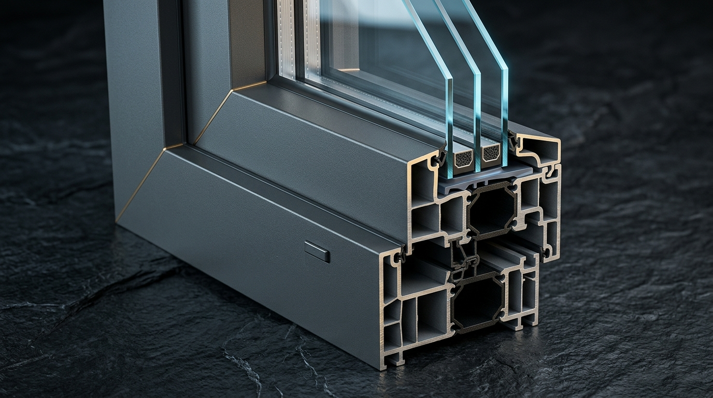
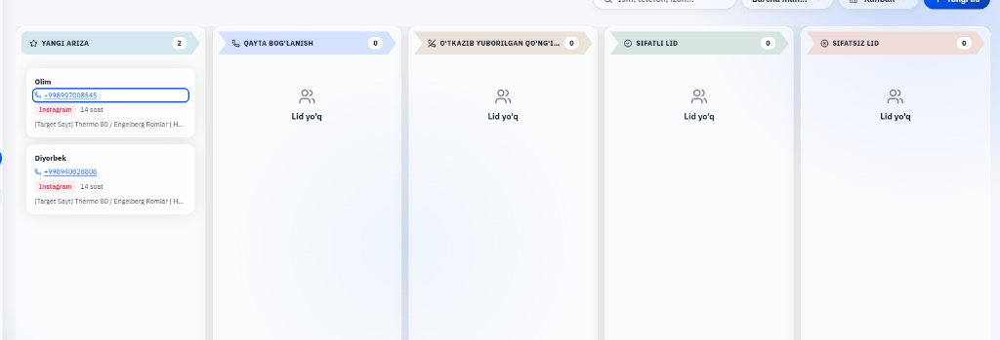

Instagram Targetdan keluvchi lidlarni qabul qilish, saralash va shartnomaga (sotuvga) aylantirishning yagona tizimi
Meta Ads Manager orqali Website Leads / Conversions yoqiladi — faqat real uy/dacha quruvchilarga ko'rsatiladi.
1) Thermo 80 profil qirqimi va zavod quvvati, 2) Dachada Gilyotina pultda ochilishi, 3) Tayyor villalar obzori.
"Bepul lazerli o'lchov + 24 soat ichida aniq smeta va Bepul yetkazib berish" — mijoz raqam qoldirishga qiziqadi.
Har bir reklama linki ?utm_source=instagram bilan mini-saytga ulanadi va CRM-ga Instagram / Issiq lid bo'lib tushadi.

THERMO 80 • AVSTRIYA
Mijoz arizani bosgan zahoti Vercel Server orqali to'g'ridan-to'g'ri istek.isteksmart.uz ning flat_marketing jadvaliga tushadi:

Yangi Ariza dan to'g'ridan-to'g'ri Sifatli Lid (Bepul o'lchov) ustuniga o'tkaziladi.Qayta bog'lanish ga, ikkinchi suhbatda zamer belgilangach Sifatli Lid ga o'tkaziladi.O'tkazib yuborilgan ga o'tkaziladi, qayta aloqa va Telegram orqali bog'lanib Sifatli Lid ga olib o'tiladi.isteksmart.vercel.app da Thermo 80, Gilyotina yoki Eshiklarni ko'rib, Ism, Telefon, Mahsulot va Hududini qoldiradi.
istek.isteksmart.uz dagi Yangi Ariza ustuniga tushadi. Call-markaz mijoz hali saytdan uzoqlashmasdan qo'ng'iroq qiladi.